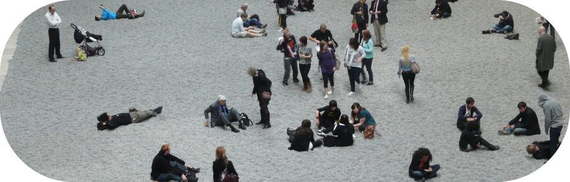

Новая Волна:
искусство в эпоху глобализации
Откройте для себя ключевые произведения, которые определили последние десятилетия искусства, от глобализации до цифровых инноваций.

Откройте для себя ключевые произведения, которые определили последние десятилетия искусства, от глобализации до цифровых инноваций.
О выставке

1990
Выставка охватывает важнейшие этапы развития современного искусства, от рождения глобализации в 1990-е до виртуальных выставок и NFT-арта 2020-х годов. Исследуйте, как мировые события и технологии влияли на творчество художников.
2020
1990 — е
Рождение глобализациив
в искусстве
Джефф Кунс – «Balloon Dog»
1994
Скульптура в виде гигантской собаки из шариков, отражающая поп-культуру и массовое потребление.
GLO
BAL
Йоко Оно – «Wish Tree»
1996
Интерактивная инсталляция, где посетители пишут свои желания и прикрепляют их к дереву.
2000 — е
Цифровая
революция
Такаси мураками– «Tan Tan Bo
Puking — a.k.a. Gero Tan»
2002
Картина, сочетающая японские традиционные мотивы с элементами поп-арта.
Олафур Элиассон–
«The Weather project»
2003
Инсталляция с искусственным солнцем, освещающим огромное пространство.
Дамиен Херст– «For the Love
of God»
2007
Платиновый череп, инкрустированный бриллиантами, исследующий темы жизни и смерти.
2010 — е
Искусство и социальные
изменения
Марина Абрамович –
«The Artist Is Present»
2007
Перформанс, где художница сидит за столом и смотрит в глаза зрителям.
Кристиан Марклей – «The Clock»
2010
24-часовой видеоарт, состоящий из отрывков фильмов, показывающих время в реальном времени.
Дамиен Херст– «For the Love
of God»
2007
Инсталляция из миллионов керамических семечек, исследующая массовое производство и индивидуальность.
Кара Уокер – «A Subtlety»
2014
Огромная сахарная скульптура, рассматривающая историю рабства и расовые отношения.
PERFO
MANS
Аниш Капур - «Descension»
2014
Инсталляция, представляющая собой водоворот, исследующий понятия бесконечности и пустоты.